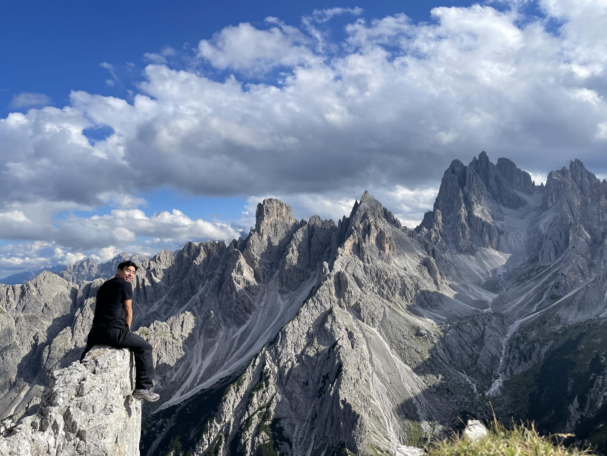
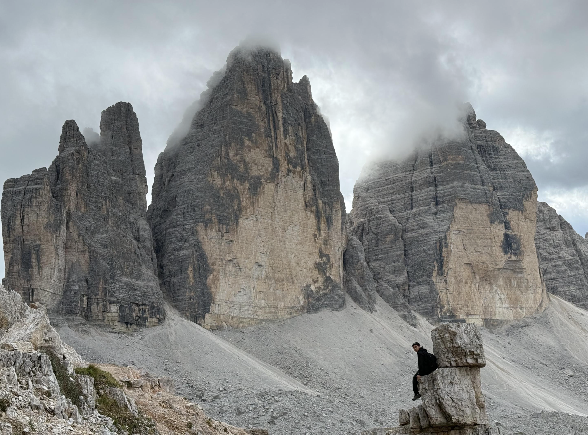
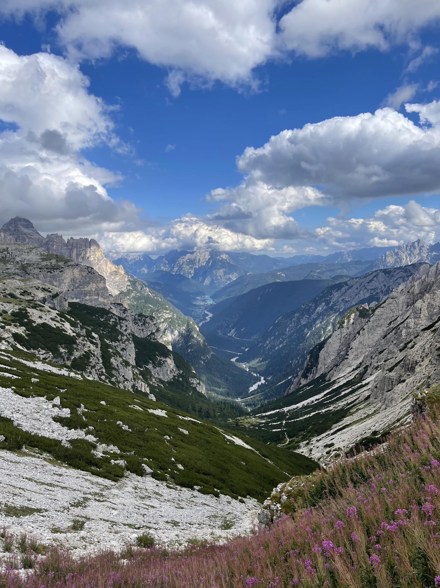
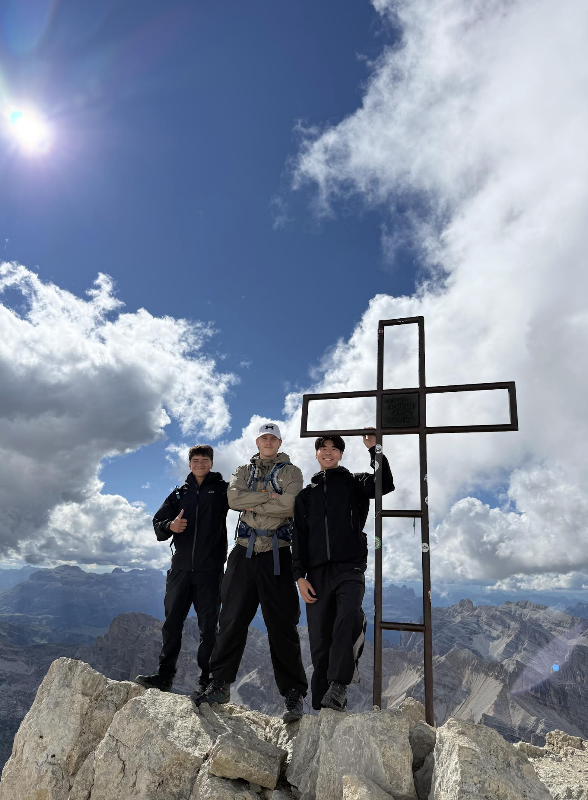
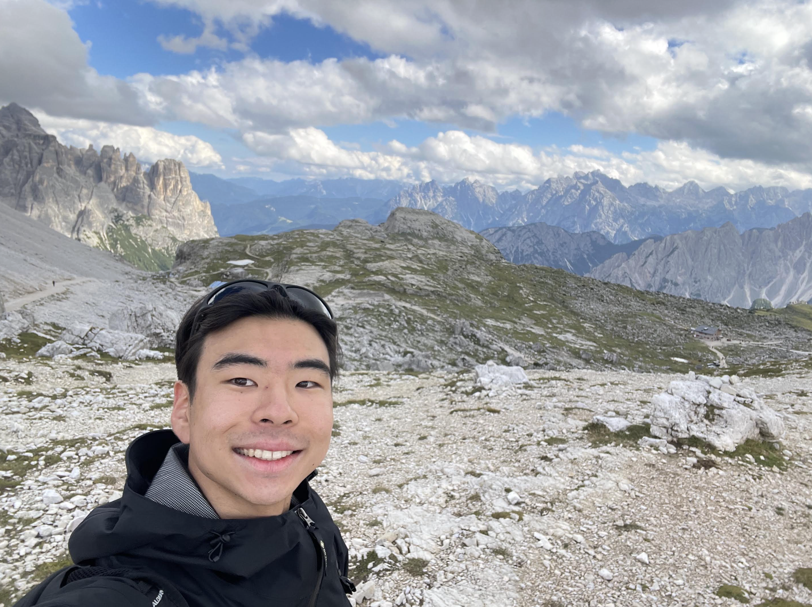

Hiking
Hiking
I love getting out into the mountains whenever I can. There is something about being above the treeline with nothing but open sky and trail ahead that I find hard to replicate anywhere else.